甘ずっぱい、いちごの気分。
ストロベリーチョコの粒を散りばめた、
ほんのりピンクのクッキー生地。
ストロベリーチョコと、
なめらかクリームチーズの出会い。
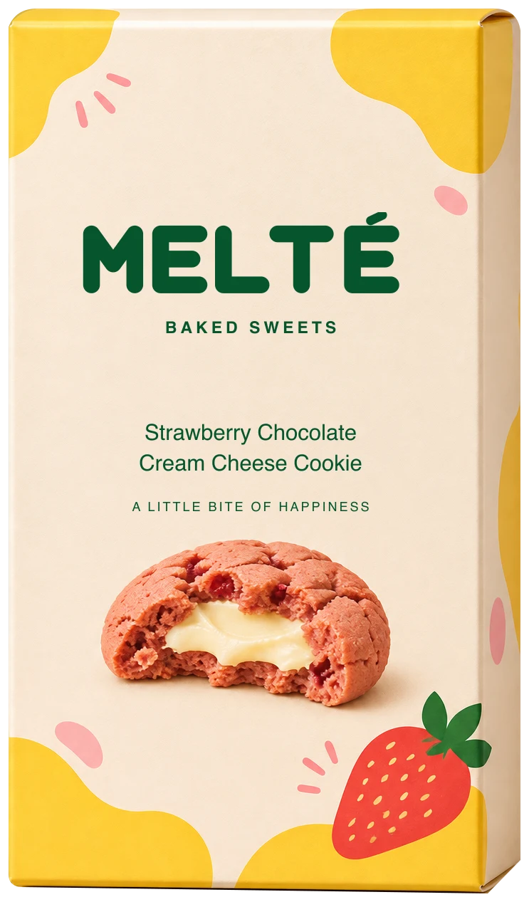
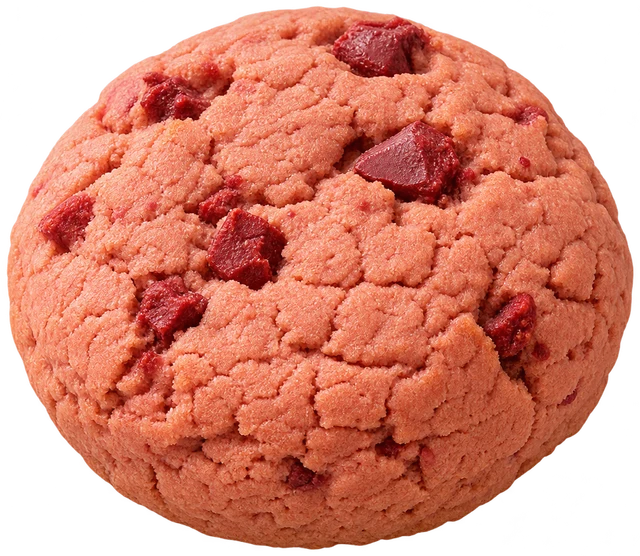
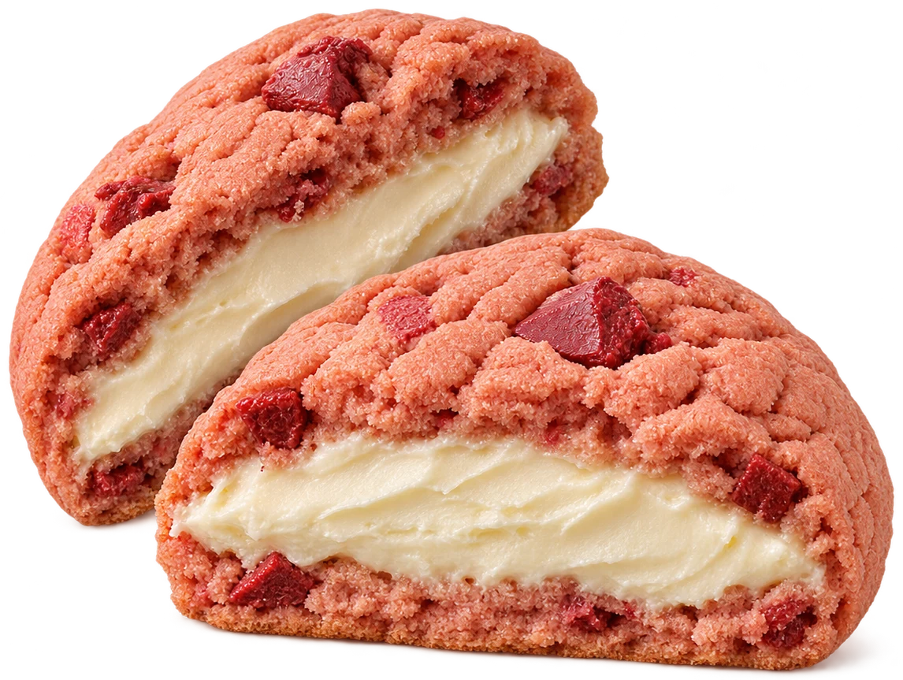
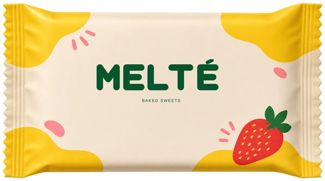
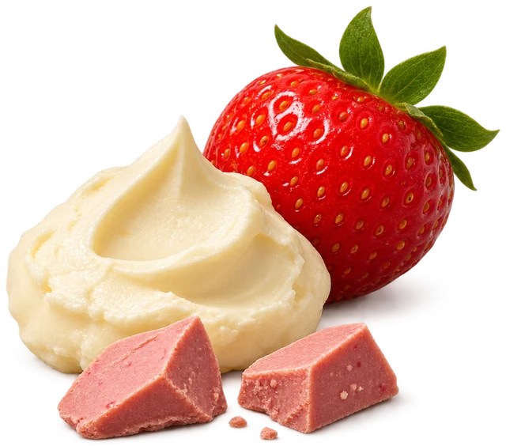
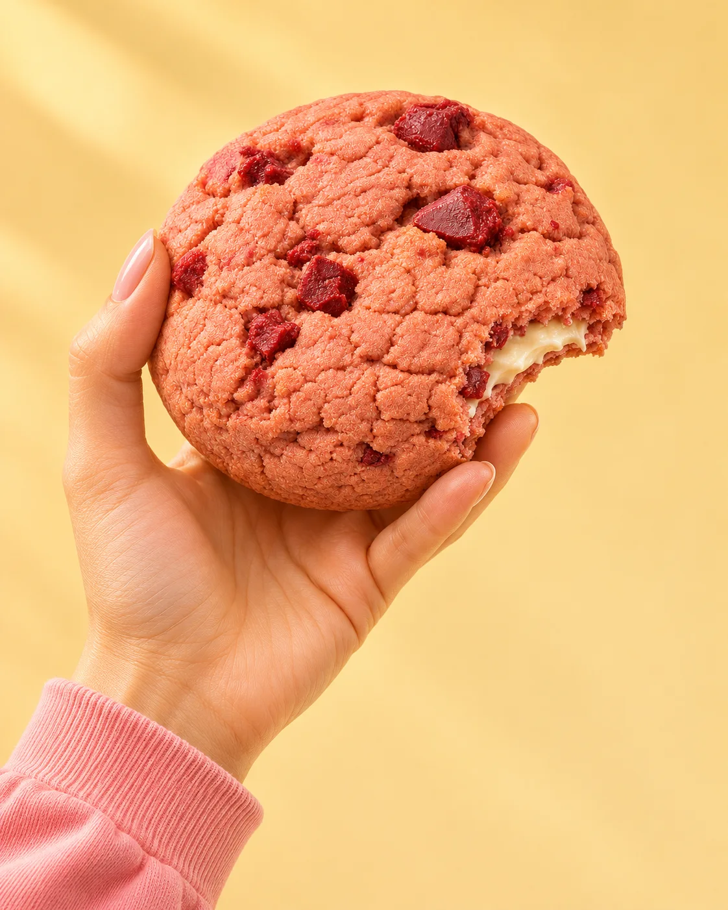
A little treat, just for you.01 / BRAND STORY
がんばった日にも、のんびりする日にも。
甘いひとくちがあれば、
いつもの時間が、ちょっと特別になる。
いちごのやさしい甘さと、
クリームチーズのまろやかなコク。
小さなクッキーに、うれしい出会いを包みました。
今日のあなたに、MELTÉを。
HAPPINESS
TO GO.
小さな幸せ、連れていこう。
03 / THE MOMENT
スクロール、またはクッキーをタップ。
さあ、どうぞ。
さくっとした生地の中に、
クリームチーズのまろやかなご褒美。
04 / OUR COMMITMENT
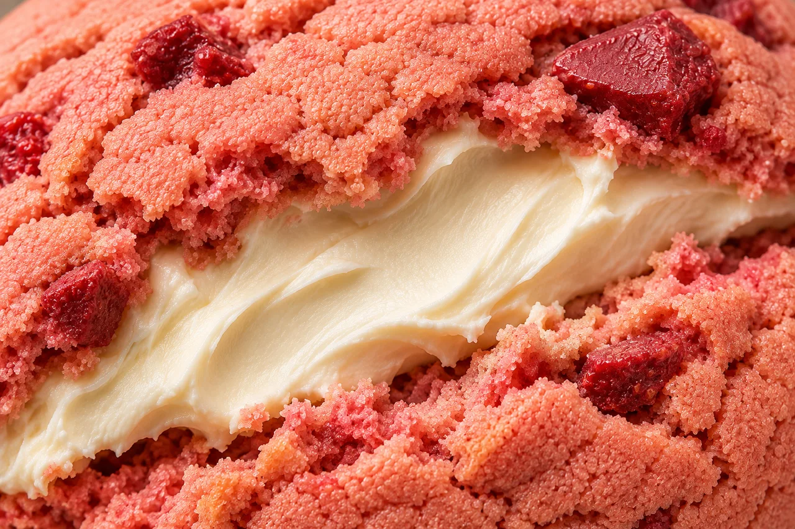
TEXTURE香ばしい生地となめらかなクリーム。
ふたつの表情が重なる楽しさを大切に。
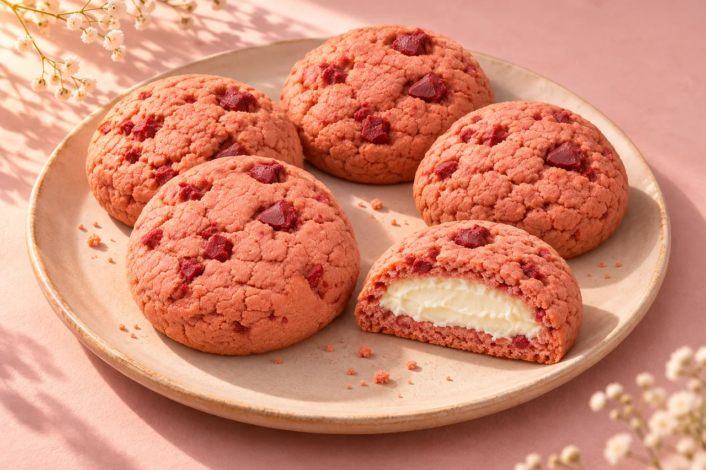
BALANCEいちごの甘さを、チーズの酸味でやさしく。
またひとくち、と思える味わいを目指して。
05 / GIFT & PACKAGE
ことばに添える、小さな甘い贈りもの。
明るい箱を開けた瞬間から、笑顔になるように。
ひとつずつの個包装で、分け合う時間も。
大切なあの人へ。もちろん、自分にも。
架空ブランドのため、商品の販売は行っていません。
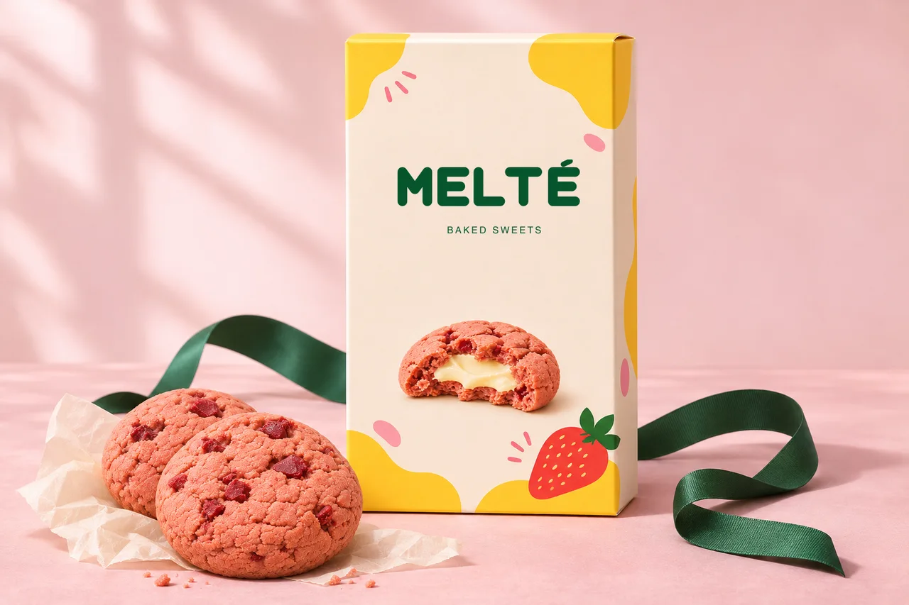
FOR YOU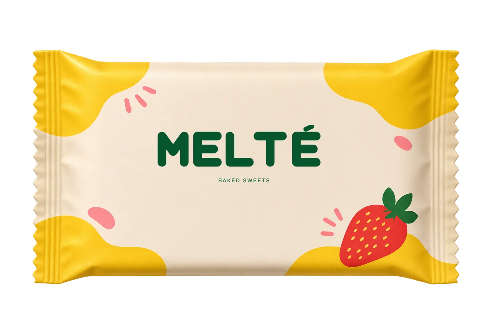
LITTLE PACKAGE, BIG SMILE.
バッグにしのばせたくなる、
小さなパッケージの楽しさ。
06 / GALLERY
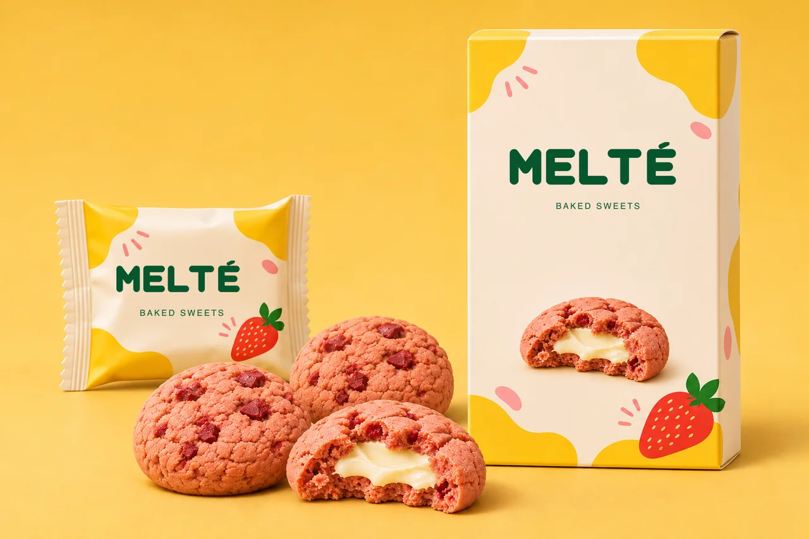
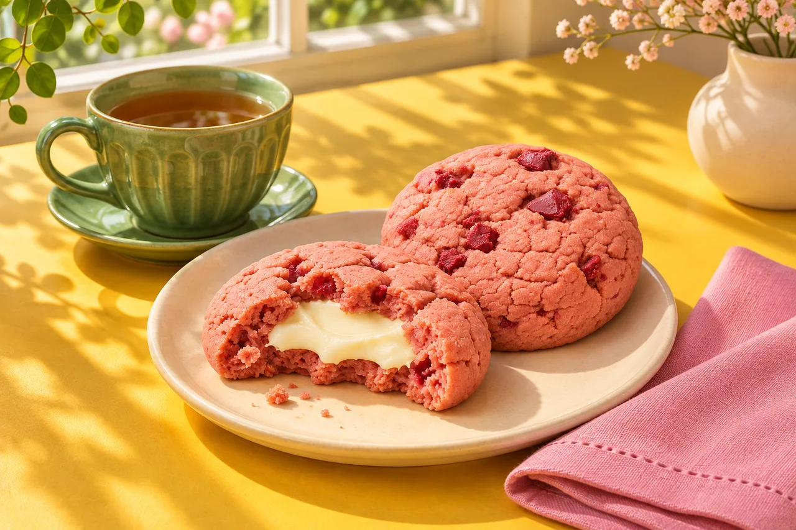
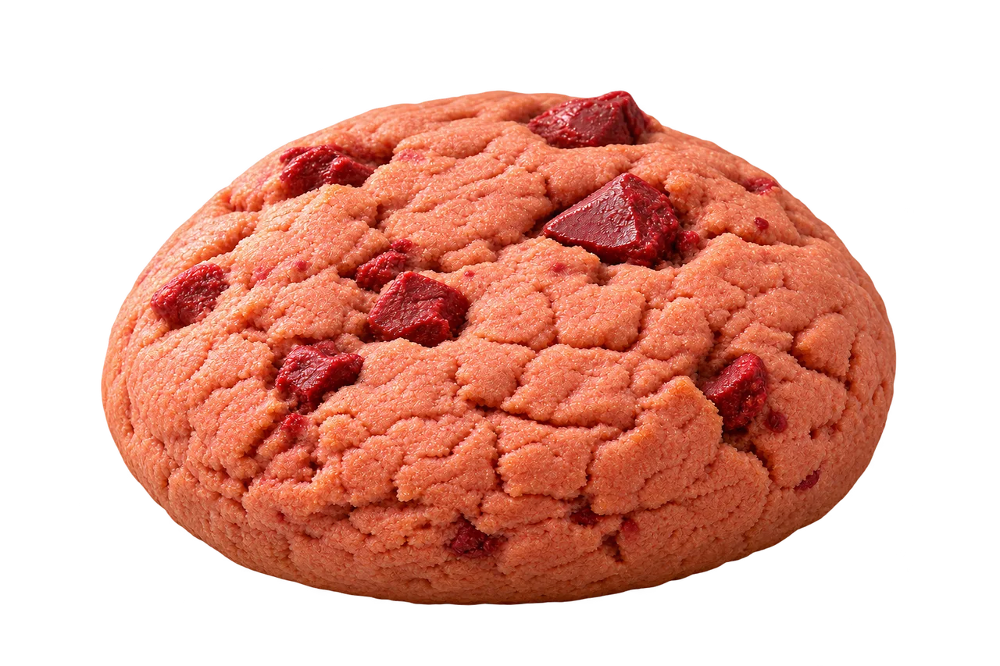